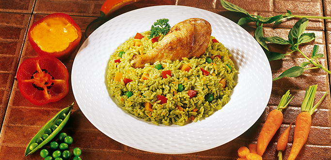

Arroz con pollo peruano

Description
A common dish enjoyed by peruvian people.
It was conceived as an alternative of arroz con pato. This is because,
at the time (XIX century), it was hard to come by 2 of the main ingredients for this recipe:
duck and chicha de jora.
Ingredients
- 3 skinless, boneless chicken breasts, cut in half
- salt and ground black pepper to taste
- ½ cup vegetable oil, divided, or as needed
- ½ red onion, diced
- 3 cloves garlic, minced
- 1½ bunches cilantro leaves, lightly chopped
- 1 tablespoon aji amarillo chile paste
- ½ cup chicken broth
- 1 red bell pepper, diced
- 2½ cups water, or more as needed
- 2 cups uncooked white rice
- 1 (10 ounce) package frozen peas and carrots
Preparation
- Season chicken with salt and pepper.
- Heat a large saucepan over medium-high heat with enough oil to coat the bottom. Brown chicken in the hot oil on all sides, 5 to 7 minutes total. Remove chicken onto a plate.
- Pour more oil into the pan and add onion; saute until translucent, about 5 minutes. Add garlic and saute, 1 to 2 minutes. Stir in cilantro, chile paste, salt, and pepper and saute until cilantro turns dark green, 3 to 5 minutes. Pour in chicken broth and deglaze, scraping the browned bits off the bottom of the pan with a wooden spoon. Bring to a light simmer; let simmer for 3 to 5 minutes.
- Transfer mixture carefully to an electric blender and puree.
- Heat more oil in the same pan over medium-high heat; saute bell pepper until soft, about 5 minutes. Return cilantro mixture to the pan and add chicken. Cover, reduce heat to low, and cook until chicken is no longer pink in the center and juices run clear, 20 to 30 minutes.
- Remove chicken from the pan. Add water and rice, adding more water if it doesn't look like enough. Bring to a boil; place a lid on the pan, reduce heat to low, and cook until all liquid is absorbed and rice is tender, 20 to 40 minutes. Stir in peas and carrots and chicken and warm through, 5 to 10 minutes.